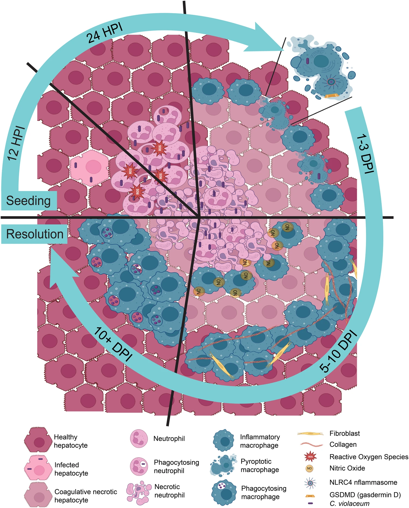

Innate Granuloma Response and Chromobacterium violaceum
Granulomas are characterized by the organization of macrophages in tissues to fight infection or wall off a foreign body. Granulomas often form around infections that cannot be cleared, and their function is thought to prevent dissemination. Pathogens can persist within these granulomas for decades. These structures are defined by the presence of macrophages, but typically they are organized by T cells of the adaptive immune response.
While studying the innate defenses against the environmental bacterium Chromobacterium violaceum, we serendipitously discovered that mice form a picture-perfect granuloma around infected lesions in the liver. This granuloma forms within 5 days and then eradicates the bacteria over the next 5–14 days — all without help from T cells or other adaptive immune cells. The innate immune system can therefore form granulomas that are functionally perfect: they not only prevent dissemination, but also kill the bacteria. We are using this model system to understand the basic biology of the granuloma response.